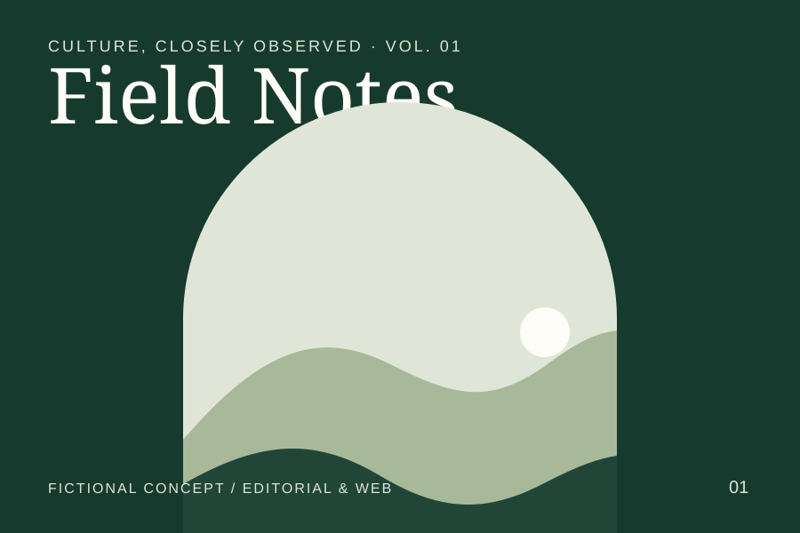
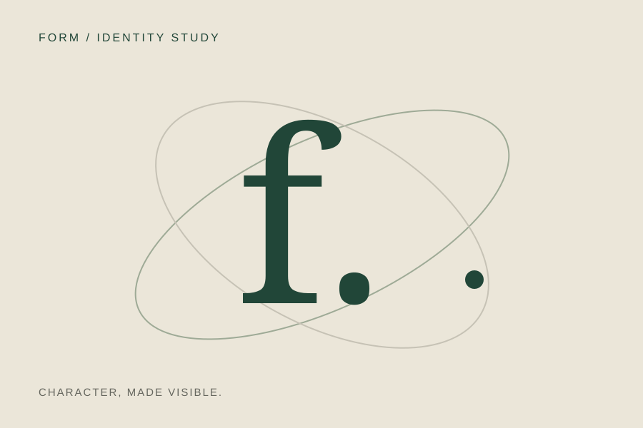
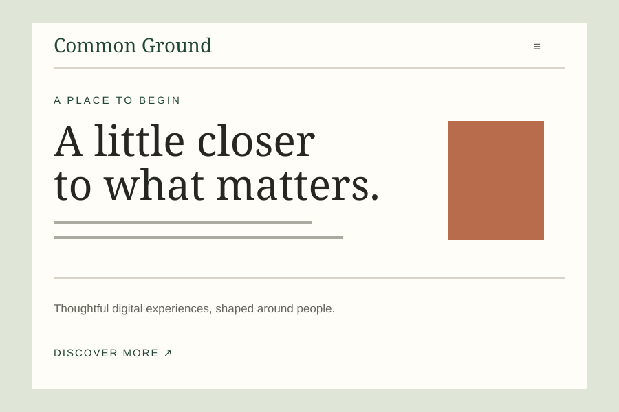

Selected concept / editorial & web
Field Notes
A considered digital home for a fictional cultural magazine about stories of people, place, and everyday curiosity.
View Field Notes case studyIndependent design, considered by nature
FORM Studio brings clarity and character to brands, websites, and the places where they meet.
Explore Field NotesOne selected story. Two ways to work.
Identity, editorial, and digital ideas made with care and a clear point of view.

Selected concept / editorial & web
A considered digital home for a fictional cultural magazine about stories of people, place, and everyday curiosity.
View Field Notes case study
Service / brand systems
Distinctive identities with a clear point of view. Strategy, art direction, and a visual language built to last.
Discuss visual identity
Service / websites & interfaces
Editorial thinking meets intuitive design. Websites and digital systems that make every interaction feel considered.
Discuss digital designHow we work
Our best work comes from open dialogue and a shared sense of purpose. We work with you, not just for you, from the first question to the final detail.
01
We begin with conversation, context, and the right questions. Before making anything, we find what matters.
02
We turn insight into a clear idea, then explore the words, images, and systems that make it unmistakable.
03
We bring the idea into the world with care, refining the details so every expression feels part of the same story.
The next chapter starts here
A new idea, a different direction, or a good question. This is a fictional studio concept, so there is no live contact address. Take a closer look at the work instead.
Explore the Field Notes conceptConcept contact · No real client or contact details are represented.